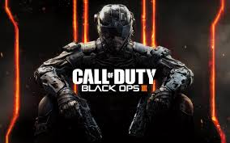
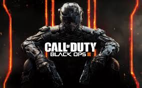

Black ops
In 2015 I used to own a ps3 which I traded in the following year,when I owned the ps4 I played black ops1 in which was my favorite zombies and played multiplayer as well.When BO2 cameout i learned about trickshotting and i still trickshot till this day. Trickshoting is a method when someone in the game will spin in the air and throw a tomahawk or shoot with a sniper before hitting the ground and hope to hit someone. I also used to feed where he get many kills without being interrupted. In 2017 I traded in my ps3 and added money to get a PS4 because my disk insert was damaged. I got BO3 even thought i didn't liked the way it looked. I also began trickshotting there and i still haven't hit a shot.
2k
When I had my PS3 I played 2k14 and 15 , but I justed played just to fool around. In my ps4, I brought 2k16 and 17 i began to play it more because it became a competition between levels in park. In 2k16 I was a allstar 1 ,but my player was trash. I didn't play it that much ,but 2k17 i began to play it more. I am a 95 overall shot creator and i got all badges HOf and 4 park badges. I have 32 badges total and i am a allstar 4 halfway to 5.